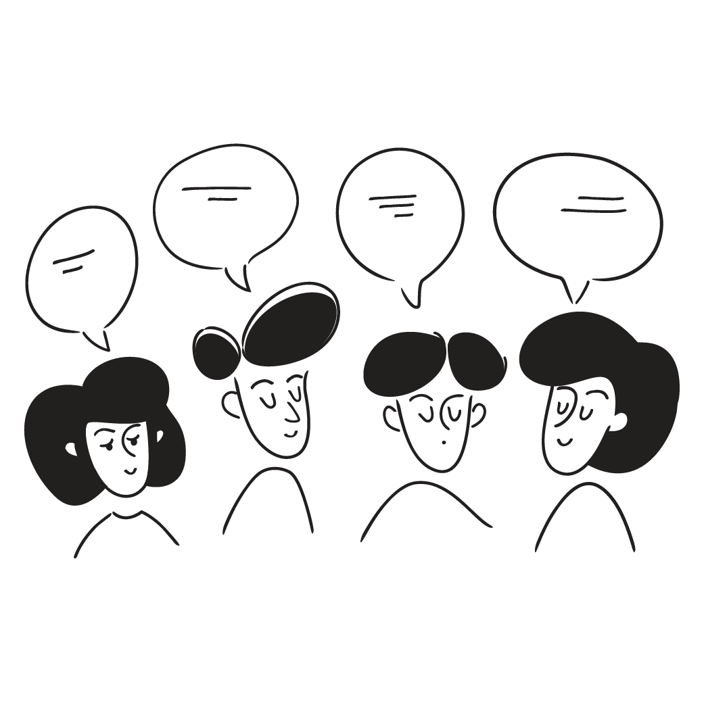

![]()
| 評価項目 | F | C | B | A | S |
|---|---|---|---|---|---|
| 本の選択と紹介 | 要点の整理が不十分で、紹介として成立していない / 内容がほとんど伝わらない、あるいは課題の趣旨から逸脱している | 本の要点が整理されていない、または内容が断片的である / 紹介が理解しにくく、聞き手に十分伝わらない / 表現に工夫がなく、単なる羅列にとどまっている | 本の要点はある程度まとめられているが、不十分または冗長な部分がある / 紹介の仕方にややわかりにくさが残る / 表現は平易だが、工夫や魅力づけはあまり見られない | 本の要点を適切にまとめている / 読み手・聞き手が理解しやすい紹介となっている / 表現に一定の工夫がみられる | 本の要点を的確かつ簡潔に整理している / 読み手・聞き手にとって非常にわかりやすく、魅力的に紹介できている / 表現に独自の工夫があり、紹介を聞いた人が「その本を読みたい」と思える内容になっている |
| グループワーク | グループワークに参加していない | グループワークに参加しているものの、常に受け身であり、消極的な態度が目立つ | 指示があれば、しっかりとグループワークに参加できる | 授業にもっとも積極的に参加している受講生の一人であり、グループワークの準備や質疑応答などに積極的、主体的に関わっている | 授業にもっとも積極的に参加している受講生の一人であり、グループワークの準備や質疑応答などでもグループを常にリードしている |
| 関心の広がり | 他の受講生の紹介に耳を傾けていない、または態度が不適切である / 異分野への関心が全く広がらず、学習機会を活用していない | 他の受講生の紹介に十分に注意を払っていない / 関心が自分の領域に偏り、異分野の本に対する理解や関心が広がらない / 学びの広がりを意識していない | 他の受講生の紹介を聞いているが、関心は主に自分の分野にとどまっている / 異分野への理解や関心の広がりは限定的である / 新しい視点を取り入れる姿勢は部分的に見られる | 他の受講生の紹介に注意深く耳を傾けている / 自分の関心とは異なる分野にも理解を示している / 新しい知識や考えを取り入れようとする姿勢が見られる | 自分の関心分野にとどまらず、他の受講生が紹介する多様な本に積極的に耳を傾けている / 異なる分野の内容を理解し、自分の学びや関心に結び付けて考えている / 紹介を受けて得た気づきや新しい関心を、自発的に表現・共有している |
| プレゼンテーション | プレゼンとして成立していない（声が聞こえない、原稿の読み上げのみなど） / 聴衆を意識した工夫が全く見られない / 質問に答えようとしない、無視する、不適切な態度をとる | 単なる要点説明にとどまり、聴衆を意識した演出がほとんど見られない / 声や表情、構成が単調で、聴衆の関心を引きつけにくい / 質問に対して十分に答えられていない、あるいは曖昧な回答が多い | プレゼンの基本はできているが、演出や工夫は限定的である / 聴衆への意識はあるが、必ずしも強く引き込む効果は見られない / 質問には答えているが、簡潔すぎる・やや不十分な回答にとどまることがある | 聴衆を意識したプレゼンを行っている / 声や表情に工夫があり、聴衆に分かりやすく伝わっている / 質問に的確に答えている | 聴衆を強く意識した工夫が随所に見られる / 声の抑揚、ジェスチャー、ユーモア、問いかけなどを効果的に使い、聴衆を引き込むことができる / 聴衆が「その本を読みたい」と思わせる高い説得力を持っている / 聴衆からの質問に誠実かつ的確に答えている |
ビブリオバトル入門：読む楽しみを分かち合う《2025》
オリエンテーション
October 1, 2025
Keywords
シラバス；ビブリオバトル；ブックカード（情報カード）；新聞書評
Ⅰ. 自己紹介
自己紹介
- 氏名：苅谷千尋（かりやちひろ）
- 所属：教育支援センター（主担当業務：高大接続コア・センター業務）
- 専門：政治学 > 政治思想史（イギリス）
- 18世紀イギリスの議会政治と議会ジャーナリズム
- レトリックの受容史：キケロ；サルスティウス；タキトゥス
- 最近の興味関心
- Webサイト
- 個人研究室
- 個人研究室：総合教育2号館6階670号室
校務（高大接続）
⑴ 高大接続リーディングセミナー
- 高校生向けに書かれた新書らを読みあう
- 最近の高校生は本を読まない？
- 高校生向けの良書の出版
- セミナーの模様
⑵ ボードゲームで学ぶ社会の平等と不平等
- フランスで作られた、社会格差を知るためのモノポリー（セミナーの模様）
⑶ 高大接続ラウンドテーブル
- 探究学習を題材に、高校生と大学生が交流（ラウンドテーブルの模様）
⑷ 高大接続ビブリオバトル入門（構想中）
- 何かよいアイデアがあれば教えて下さい
Ⅱ. ビブリオバトル公式ガイド
0. 考案者・谷口先生の言葉
一読み手としては、書店で買っても、ネット通販で買っても、大体、値段も変わらないし、本の内容は絶対に変わらない。買いやすい方で買えばいいのだ。それよりも、人生で読める本が限られているなか、一個人としての僕たちにとっては、「どんな本とどこで出会うか」の方が、ずっと大切な問題なのではないだろうか（谷口 (2013, p. 11)）。
友人や知人、親や先生、上司や同僚に薦められて読んだ本は、本棚の中でも独特の味わいを持って並んでいる気がする。本棚をよく見てみると、その本を共通の話題にした友人や知人がいたりすることに気づくのではないか。少なくとも僕の本棚にはそんな感覚がある。僕たちの書籍、情報との繋がりは、未だに自らの周辺の多くの人々に媒介されている（谷口 (2013, p. 12)）。
（友人の言葉・当時、工学部の大学院生）「僕たちが研究室でやっている研究でも、やっぱり、常に閉じた専門領域だけじゃなくて、その殻を破って他の専門領域と融合するんだって気概が必要やと思うんですよね」（谷口 (2013, p. 64)）。（この前振りの後『禅と脳』を紹介）
1. コンセプト
- 本のフットサル（のように気軽に楽しむ）
- 本を通して人を知る 人を通して本を知る12
- ビブリオバトル普及委員会 (2013, pp. 5–6)
ルール
- 発表参加者が読んで面白いと思った本を持って集まる
- 順番に一人5分間で本を紹介する
- それぞれの発表の後に参加者全員でその発表に関するディスカッションを2〜3分行う
- 全ての発表が終了した後に「どの本が一番読みたくなったか？」を基準とした投票を参加者全員1票で行い、最多票を集めたものを「チャンプ本」とする
- ビブリオバトル普及委員会 (2013, p. 7)
本講義もこの公式ルールに準拠しますが、ブックカードを適度に参照することは可とします（公式ルールはメモを見る行為自体不可）。ただし、常時、ブックカードを見る、ブックカードのメモを読み上げる行為は禁止します。あくまで、記憶の助けとして利用下さい
成り立ち
ここで補足すると、一般に大学の理系研究室のゼミでは、大きな方向性の中で同じテーマを持って研究しており、メンバーの研究テーマや関心は比較的似た分野となります。ですから、勉強会となると、ある程度の知識を前提として、参考文献（書籍や論文）を読んできて考えを発表するか、自身の研究発表の進捗を報告するのが普通です。ですが、私たちが所属していた当時の共生システム論研究室は、「システム論」という非常に抽象的なテーマのもとに、多くのテーマで研究を進めており、したがってメンバーの関心は非常に幅広いものでした。加えて、大学院から当研究室に入ってくる学生も多く、テーマによって前提となる知識のレベルにも差がありました。いま思えば、この多様性の中でコミュニケーションを深める方法を考える必要があったことが、のちにビブリオバトルを生み出すに至った遠因にあります（ビブリオバトル普及委員会 (2013, p. 21)）。
ビブリオバトル公式大会
全国大学ビブリオバトル2025
- 金沢大学図書館ビブリオバトル2025（兼 全国大学ビブリオバトル2025ブロック予選）
- 開催日時：2025年10月10日（金）16時30分～17時10分
- 会場：附属図書館 中央図書館ブックラウンジ（ほん和かふぇ。）
- 北陸Aブロック
- 開催日時：2025年10月18日（土）14:30～
- 会場：石川県立図書館 だんだん広場
Ⅲ. ビブリオバトル入門の構成
ビブリオバトル入門の構成（1/3）
- 好きな本を紹介しよう：
- 好きな本（ジャンルを問わない※マンガは除く）
- 研究分野の本を紹介しよう：
- 専攻する研究にかかわる本（※学術書を意味しない）
- 研究分野と（少し）外れた本を紹介しよう：
- 研究分野とはまったく違う（人文科学系が自然科学系や医学系の本を選ぶ）、もしくは少し外れた本（日本史専攻者が中国史の本を選ぶ）など（※学術書を意味しない）
ビブリオバトル入門の構成（2/3）
- 以上の3つの本について、グループを変えて、計2回、報告して下さい（第1ラウンド1、第2ラウンドと表記、表現します）
- 第1ラウンドの反省を第2ラウンドでは活かして下さい
- 本を読み直す、ブックカードを書き足す、など
- 第2ラウンドではブックカードへの依存を減らしましょう
- 第1ラウンドの反省を第2ラウンドでは活かして下さい
- グループは3〜4人の少人数で編成します
- トランプを配り、ランダムで編成します
- 授業内で紹介する本を事前に読み、紹介の仕方について授業までに考えてきて下さい（ブックカード参照）
- この授業のためにわざわざ本を選び、読む必要はありません（再読は必要かもしれません）。趣味で読んでいる本、この授業以外の授業あるいは研究のために読んだ本でかまいません
ビブリオバトル入門の構成（3/3）
授業イメージ
- 大阪大学全学教育推進機構ビブリオバトル入門（中村征樹先生）
授業終わりの振り返りの時間には、学生同士で「あの本はおもしろそうだ」などの感想などを言い合っており、活発な交流が見られました。先生からは特にアドバイス等はないため、発表者が聴衆をひきつける工夫やどうすればうまく伝えられるかなどは、学生が主体的に考えていました。SAが授業の進行をしているのは、「SAが言ったほうが学生に響くから」だそうです。
Ⅳ. シラバス
キーワード
- 知的雑談と耳学問
授業の主題
ビブリオバトルは、発表者がお勧めの本を持ち合い、1人5分の持ち時間で紹介（書評）した後、発表者と観客が一番読みたくなった本（「チャンプ本」）を決定するというイベントです。
この授業はビブリオバトルの基礎的知識を習得し、実際にビブリオバトルを実践します。毎回の授業は少人数のグループワークが中心です。ビブリオバトルのあとは、アフターセッションの時間を設け、追加の質問や感想などを自由に意見交換します。
受講生はビブリオバトルでの本の紹介を通して、あらためて自分の「好きな本」、「面白い本」、「大切な本」を見つけるスキルやその内容をまとめる力を身につけるとともに、プレゼンテーション能力、ファシリテーション能力、タイムマネジメント能力を磨くことができます。
受講生は、全国大学ビブリオバトルなどでの活躍が期待されますが、このような全国大会への参加は必須ではありません。ビブリオバトル自体にはそれほど興味はない学生の受講を歓迎します。本好きな学生の、学域、学類を超えたサロンのような場になればと思っています。
学修目標（到達目標）
- 受講生が、自分の好きな本もしくは研究にかかわる本を選び、ブックカードにしたがって要点をまとめ、本を紹介できる
- 受講生が、他の受講生のプレゼンテーションを聞き、積極的に質疑応答に参加することで、傍観者ではなく、グループワークの担い手となることができる
- 受講生が、自分の関心分野だけでなく、他の受講生の紹介する本に触れることによって、様々な分野に関心を広げることができる
- 受講生が、実際のビブリオバトルを意識して、プレゼンテーションを演出できる
公式サイトに掲載のシラバスではブックシートと表記していましたが、要点だけを書いて欲しいので、ブックカードにあらためています
講義スケジュール
授業日開始までに､当日使用するスライド資料にアクセスできるようにします
欠席者はご自身で授業内容､宿題をフォローしてください（欠席連絡は不要です）。どうしても不明な点があれば、お気軽にお問い合わせ下さい
講義スケジュール（1/2）
- Week 1 (10/1)：オリエンテーション
- シラバス；ビブリオバトル；ブック・レポート；新聞書評
- Week 2 (10/8) ：好きな本を紹介しよう①
- 好きな本（ジャンルを問わない）：第1ラウンド
- Week 3 (10/22) ：好きな本を紹介しよう②
- 好きな本（ジャンルを問わない）：第2ラウンド
- Week 4 (10/29) ：研究分野の本を紹介しよう①
- 専攻する研究にかかわる本：第1ラウンド
- Week 5 (11/5) ：研究分野の本を紹介しよう②
- 専攻する研究にかかわる本：第2ラウンド
講義スケジュール（2/2）
- Week 6 (11/12)：研究分野と（少し）外れた本を紹介しよう①
- 専攻する研究に隣接する本：第1ラウンド
- Week 7 (11/19)：研究分野と（少し）外れた本を紹介しよう②
- 専攻する研究に隣接する本：第2ラウンド
- Week 8 (11/26) ：まとめと振り返り
- まとめ；振り返り；プレゼンテーション；チャンプ本選定
10月15日は月曜授業日のため、本授業はありません
評価方法と割合：評価方法
次項の項目及び割合で総合評価し、次のとおり判定します。
- Ｓ（達成度90％～100％）
- Ａ（同80％～90％未満）
- Ｂ（同70％～80％未満）
- Ｃ（同60％～70％未満）
以上を合格とし、「不可（同60％未満）」を不合格とする。（標準評価方法）
評価方法と割合（2/3）：評価の割合
- 授業の感想：30%
- ブックカード：30%
- 学期末振り返りレポート：10%
- プレゼンテーション：10%
- 受講態度：20%
※授業には3分の2以上の出席を必要とします ※評価基準は、授業目標に準じます
評価方法と割合（3/3）：ルーブリック
授業時間外の学修に関する指示
1. 予習に関する指示
授業内で紹介する本を事前に読み、紹介の仕方について授業までに考えてきて下さい。この授業のためにわざわざ本を選び、読む必要はありません。趣味で読んでいる本、この授業以外の授業あるいは研究のために読んだ本でかまいません。
学期中に3冊前後の本を紹介することになります。好きな本と研究分野にかかわる本が対象です。要約については、ブックカードにしたがってまとめて下さい。ブックカードの他、学期末振り返りレポートが課されます。
2. 復習に関する指示
授業の感想を指定のフォームに入力下さい。
教科書・参考書
参考書
- 谷口忠大（2013）『ビブリオバトル：本を知り人を知る書評ゲーム』（文春新書）
- ビブリオバトル普及委員会（2013）ビブリオバトル入門 : 本を通して人を知る・人を通して本を知る（情報科学技術協会）
教科書・参考書補足
- 教科書は使用しません。教材は適宜、授業サイト（https://kariyach.github.io/teaching/Biblio-battle/）を通して配布します。
オフィスアワー・連絡先等（学生からの質問への対応方法等）
- 随時、対応します
- 授業の際、またはメール（kariyach@staff.kanazawa-u.ac.jp）による事前連絡にて、日時を調整します
Ⅴ. 毎回の授業構成
毎回の授業構成（1/3）
初回と最終授業を除いて、毎回の授業は以下のように構成します
- 前回の振り返り（授業の感想の共有）
- グループ分け
- アイスブレイク
- ビブリオバトル
- 本の紹介
- 質疑応答
- アフターセッション（チャンプ本の決定を含む）
- チャンプ本プレゼンテーション（2名程度・ランダム）
Note | 補足
- 各グループにおいてチャンプ本に選ばれた方は加点します
- チャンプ本のプレゼンテーションを行った方は最終日に報告する必要はありません
- アイスブレイクは、クラスの雰囲気が打ち解けてきた場合は省略します
毎回の授業構成（2/3）
授業の約束（教員との約束）
この授業はグループワーク中心の授業です。教員一人では授業を作ることができません
- 教員：学びの空間設計者
- 受講生：コンテンツ制作者
皆さんも授業を作るメンバーとして、以下の3つを心がけて下さい
- 元気に毎回出席する（ただし無理は禁物）
- グループワークには積極的に参加する
- 提出物はちゃんと出す

毎回の授業構成（3/3）
紹介された本
- この授業内で皆さんが紹介した本は、ブクログにリストアップします
Ⅵ. 成績評価
成績評価
重要 | 成績評価
- 出席自体は評価対象ではありません
- 受講生全員に（最低でも）A評価を付けられるように、成績評価物、成績評価基準を設けています
- 特に、提出すれば機械的に点数が付くものを落とさないようにして下さい
成績評価 > 宿題
⑴ ブックカード（1/3）
公式サイトに掲載のシラバスではブックシートと表記していましたが、要点だけを書いて欲しいので、ブックカードにあらためています
- 情報カード1を配布します。情報カード一枚に以下の2点について、箇条書き的にメモして、当日に臨んで下さい
- 書評本の内容や構成などに関するメモや重要な一節の抜書き
- 書評者の書評本に対する評価、考え、意見などに関するメモ
この他、本の著者名、書名、受講生の氏名を記載して下さい
成績評価 > 宿題
⑴ ブックカード（2/3）
- ビブリオバトルの基本的な考え方は、メモを読み上げるのではなく、アドリブ的に紹介することです。ですので、情報カードに読み上げ原稿を書くなどの行為は禁止します。あくまで、何をどのような手順で話すか、など、メモ程度の記述1として下さい
- 情報カード裏面は他の受講生から受けた質問などをメモするためだけに使って下さい
成績評価 > 宿題
⑴ ブックカード（3/3）
- ブックカードは、1. 好きな本を紹介しよう、2. 研究分野の本を紹介しよう、3. 研究分野と（少し）外れた本を紹介しよう、の3回、提出して下さい
- 情報カードそのものは回収しませんが、予習確認のために、写真に撮ってGoogle フォームより送って下さい（提出先はこちら）
- 各10点、計30点（どのようなまとめかたをするかは人それぞれですので、質的な評価はしません。提出すれば機械的に10点を付けます）
成績評価 > 宿題
⑵ 授業の感想
- 毎回、重要だと思った点や面白いと思った点など、自由に授業の感想をまとめて下さい（150字から200字程度）。
- 初回と最終授業については、授業についてのアンケートも付しています
- 各3点、8回実施、全て提出した者は＋6点、一度提出しなかった者は＋3点、その他は加点なし、計30点（質的な評価はしません。規定字数に達していない、あるいは毎回、同じ内容の感想を書いている、他人の感想を書き写しているなどのようなものでなければ、提出すれば機械的に3点を付けます）
- 提出先はこちら
⑶ 学期末振り返りレポート
- 詳細は別途連絡します（A4一枚程度）
- 10点（基準点：7点、ルーブリックに準拠します）
成績評価 > その他
⑴ 受講態度
- グループワークへの貢献度、参加度（10点、基準点：7点、ルーブリックに準拠します）
- グループワークにおいてチャンプ本に選ばれた回数に応じて加点（各2点、最高10点まで）
⑵ プレゼンテーション
- 実施日：
- 各授業の最終セクション「チャンプ本プレゼンテーション」
- 上記でプレゼンテーションを行わなかった者は最終授業日（11月26日）
- 評価：
- 本の紹介及び質疑応答の受け答え
- 10点（基準点：7点、ルーブリックに準拠します）
- 全てのプレゼンテーション実施後に、ビブリオバトル入門《2025》のチャンプ本を決定します（投票）
- 優勝者には5点、2位と3位は3点、4位と5位は2点をボーナス加点（100点満点の範囲外で加点）します
Ⅶ. 新聞書評と出版会社PR誌
新聞書評と出版会社PR誌
新聞書評の勧め
PR誌の勧め
Ⅷ. グループ交流会
グループ交流会
- 次回以降の授業運営の練習を兼ねて、グループ交流会を行います
- トランプのカードを引き、数字に応じて、席を移動して下さい
自己紹介
- 氏名、学年、学類
- 受講理由
- ビブリオバトルの経験の有無やイメージ
- これまで金沢大学で受講した授業で好きな授業名とその理由
グループ交流会
重要 | グループワークの心理的安全性
- 「この場では安心して意見を言える」という感覚が何より大切です
- グループワークで話したことは外に持ち出さない
- 相手の意見を批判しない（マウンティング行為を含む）
- グルームのメンバー全員が「つながり」を生む声かけを心がける（「◯◯さんはどう思いますか？」）
禁止 | マウンティング行為
- 知識ひけらかし型：「この本は原著で読んでるから、翻訳はちょっとね」/ 「作者の別の論文を読んでないと本当の意味は分からないよ」
- 先取り型：「あー、この後の展開は◯◯だから、そこまで読まないと面白さはわからないよ」/「私、もう続編も全部読んでるから」
- 比較優位型：「その感想は初心者っぽいね」 / 「自分はもっと難しい本を普段読んでるから、この本は物足りないかな」
- 発言の矮小化型：「その見方は浅いよ、本当はこう読むべきなんだ」 / 「その感想はよくあるけど、重要なのは別のところだよ」 / 「それってあなたの感想ですよね」
Ⅸ. 宿題と次回の持参物
宿題と次回の持参物
- 宿題：
- 授業の感想
- ブックカード
- 持参物：ブックカードと、選択した本
宿題と次回の持参物については今回の授業で説明した通りです。特段の変更がない限り、次回からは案内しません。特にホームページを参照下さい
引用文献
引用文献
バイヤール，ピエール, 2016. 読んでいない本について堂々と語る方法. 筑摩書房.
ビブリオバトル普及委員会, 2013. ビブリオバトル入門 : 本を通して人を知る・人を通して本を知る. 情報科学技術協会.
梅棹忠夫., 1969. 知的生産の技術. 岩波書店.
谷口忠大., 2013. ビブリオバトル：本を知り人を知る書評ゲーム. 文藝春秋.